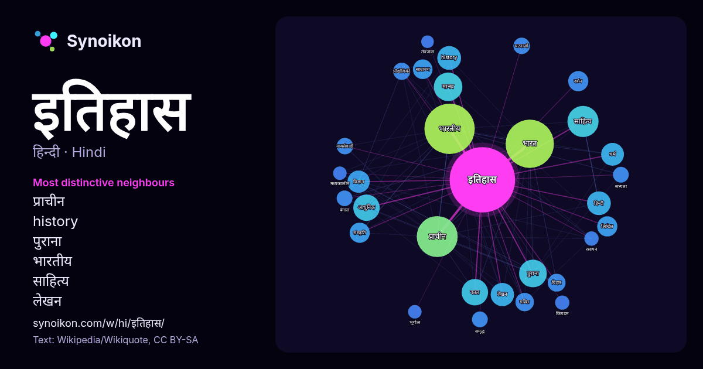

हिन्दी · लोकप्रिय शब्द
इतिहास
“history” · विकिपीडिया, Wikiquote के 1194 प्रयोगों में इसके आसपास मिले शब्द।

सबसे विशिष्ट पड़ोसी
- प्राचीन 25×
- history 25×
- पुराना 24×
- भारतीय 19×
- साहित्य 16×
- लेखन 16×
- मानव 15×
- लिखित 14×
- आधुनिक 13×
- भारत 13×
- गणित 12×
- मार्क्सवादी 12×
- हिन्दी 10×
- काल 10×
- साम्राज्य 9.6×
- बिहार 9.5×
- विज्ञान 9.4×
- दर्शन 9.4×
- समृद्ध 9.3×
- प्रौद्योगिकी 9.2×
× = सामान्य विकिपीडिया टेक्स्ट की तुलना में कितने गुना अधिक।
सबसे अधिक आने वाले पड़ोसी
- भारतीय 112
- भारत 103
- प्राचीन 74
- साहित्य 43
- मानव 36
- पुराना 34
- आधुनिक 31
- काल 31
- history 25
- विश्व 25
- हिन्दी 25
- लेखन 24
- धर्म 23
- विज्ञान 22
- विकास 21
- महत्वपूर्ण 19
- वर्ष 19
- अध्ययन 18
- दर्शन 18
- लिखित 18
संदर्भ में
- इतिहास का प्रयोग विशेषतः दो अर्थों में किया जाता है।जैसे एक है प्राचीन अथवा विगत काल की घटनाएँ और दूसरा उन घटनाओं के विषय में धारणा भारतीय संस्कृति में Wikipedia snippets · इतिहास
- इतिहास-लेख या इतिहास-शास्त्र (historiography) से दो चीजों का बोध होता है- (१) इतिहास के विकास एवं क्रियापद्धति का अध्ययन तथा (२) किसी विषय के इतिहास से Wikipedia snippets · इतिहास-लेख
- सैन्य इतिहास (Military history), मानविकी की वह विधा है जो मानव इतिहास के सशस्त्र संघर्षों का लेखा-जोखा तथा उसका समाज, संस्कृति एवं अर्थव्यवस्था आदि पर Wikipedia snippets · सैनिक इतिहास
- निवास करता था| भारतीय उपमहाद्वीप के सबसे उत्तरी भौगोलिक क्षेत्र कश्मीर का इतिहास अति प्राचीन काल से आरम्भ होता है। समय के साथ धार्मिक और सांस्कृतिक प्रभावों Wikipedia snippets · कश्मीर का इतिहास
- अफ्रीका का इतिहास को मानव विकास का इतिहास भी कहा जा सकता है। मानव सभ्यता की नींव पूर्वी अफ्रीका में होमो सेपियन्स प्रजाति के वानर द्वारा रखी गयी। यही प्रजाती Wikipedia snippets · अफ़्रीका का इतिहास
- भारत का इतिहास कई सहस्र वर्ष पुराना माना जाता है। 65,000 साल पहले, पहले आधुनिक मनुष्य, या होमो सेपियन्स, अफ्रीका से भारतीय उपमहाद्वीप में पहुँचे थे, जहाँ Wikipedia snippets · भारत का इतिहास
- भारत एक साझा इतिहास के भागीदार हैं, इसलिए भारतीय इतिहास की इस समय रेखा में सम्पूर्ण भारतीय उपमहाद्वीप के इतिहास की झलक है। पाषाण युग इतिहास का वह काल है Wikipedia snippets · भारतीय इतिहास की समयरेखा
- हिन्दू समुदाय पिंडिती का है का इतिहास सबसे आधुनिक है। इस धर्म को वेदकाल से भी पूर्व का माना जाता है, क्योंकि वैदिक काल और वेदों की रचना का काल अलग-अलग Wikipedia snippets · हिन्दू धर्म का इतिहास
और शब्द
- ईश्वर
- कार्य
- कुत्ता
- गर्मी
- गाना
- घंटी
- घड़ी
- घोड़ा
- चाय
- चित्रकला
- छाया
- जंगल
- जलवायु
- जीवन
- तूफ़ान
- दर्पण
- द्वीप
- नक्षत्र
- नमक
- परिवार
- पहाड़
- पानी
- पैसा
- प्रकृति
- बगीचा
- बिल्ली
- भाषा
- भोजन
- माता
- मानचित्र
- मृत्यु
- मौन
- रेगिस्तान
- रेलगाड़ी
- रोटी
- वर्षा
- विज्ञान
- शक्ति
- शरद
- शहद
- शहर
- सड़क
- सत्य
- समय
- सर्दी
- सेतु
- स्वर्ण
- स्वास्थ्य
- हृदय
2026-10-09 को डिफ़ॉल्ट सेटिंग्स (±5 शब्द, मध्यम कॉर्पस) के साथ पहले से गणना की गई। इंटरैक्टिव मानचित्र इसे लाइव डेटा से ताज़ा कर सकता है।
मशीन-अनूदित इंटरफ़ेस; सुधारों का स्वागत है।